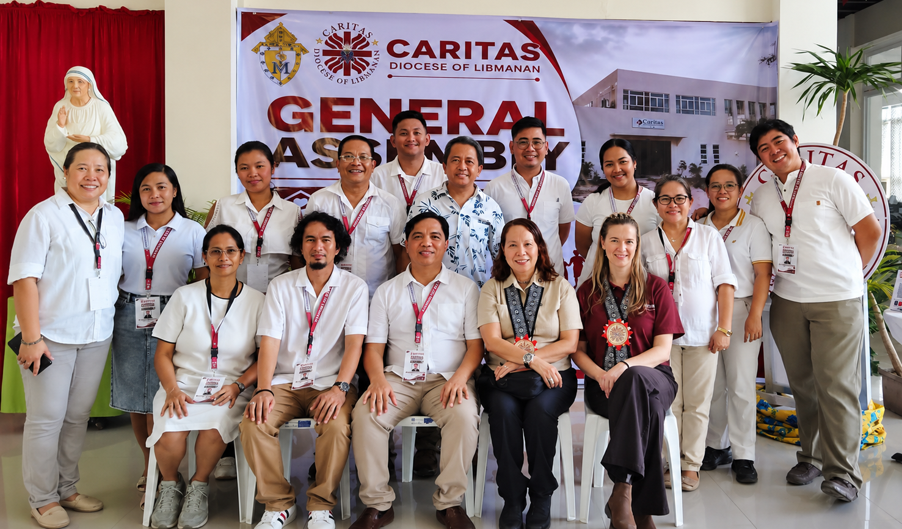

About Our Identity
Caritas Diocese of Libmanan, Inc. serves as the official humanitarian, development, and social action arm of the Diocese. Rooted firmly in the Social Teachings of the Church, we operate at the crucial interplay where Gospel values directly confront and transform the real-world challenges and signs of the times.

Our Vision
A community of faith-filled, self-reliant, and resilient individuals living in dignity, executing stewardship over creation, and actively participating in building a just, peaceful, and solidary society.
Our Mission
To witness Christian love by initiating and sustaining rights-based, gender-sensitive, and ecology-centered developmental programs. We work to empower the marginalized, organize localized resilient structures, and advocate for total human development.
Our Pillars of Social Witnessing
Human Dignity
Upholding the sacred worth of every individual as created in the image of God, ensuring access to life's basic structural requirements.
Preferential Option
Directing institutional focus, logistical assets, and community empowerment explicitly toward the poorest and most vulnerable parishes.
Care for Creation
Advocating for aggressive ecological preservation, climate change adaptation, and sustainable local community agriculture modules.